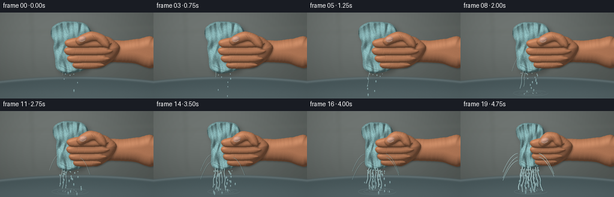
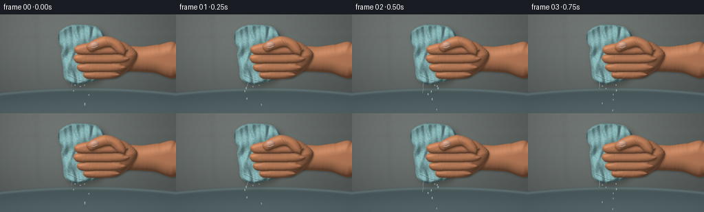
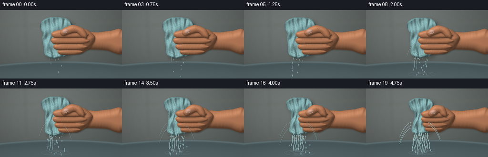
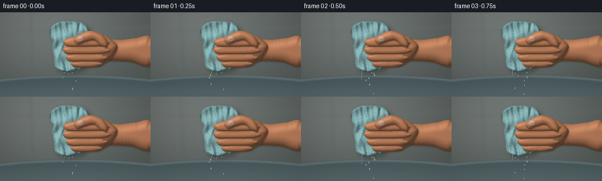

CODING AGENTS AS PIXEL WORLD MODELS
traex/GPT-6.1-Sol · phygen_012
点击播放 · 原生 RGB 像素
逐轮保存的候选
回放视频、检查图与代码变化。
每份候选均可单独播放。实际图片检查记录在下方工具轨迹中。
候选 01播放与检查图
点击播放 · 原生 RGB 像素


展开代码变化
--- 上一保存版本
+++ 本次保存版本
@@ -0,0 +1,269 @@
+from pathlib import Path
+import json, math
+import numpy as np
+from PIL import Image, ImageDraw, ImageFilter
+from scipy.ndimage import distance_transform_edt, gaussian_filter
+import artifact_io
+
+ROOT = Path(__file__).resolve().parent
+SPEC=json.loads((ROOT/'task_spec.json').read_text())
+W,H=SPEC['width'],SPEC['height']
+S=3
+WW,HH=W*S,H*S
+Y,X=np.mgrid[0:HH,0:WW].astype(np.float32)/S
+rng=np.random.default_rng(217)
+noise=gaussian_filter(rng.normal(0,1,(HH,WW)), .65)
+fine=rng.normal(0,1,(HH,WW)).astype(np.float32)
+
+# Smooth hand-drawn contours, shaded with local surface normals.
+def curve(points, closed=True, n=15):
+ p=np.array(points,float)
+ if closed: pp=np.vstack([p[-1],p,p[0],p[1]])
+ else: pp=np.vstack([p[0],p,p[-1]])
+ out=[]
+ for i in range(1,len(pp)-2):
+ a,b,c,d=pp[i-1:i+3]
+ for t in np.linspace(0,1,n,endpoint=False):
+ out.append(.5*((2*b)+(-a+c)*t+(2*a-5*b+4*c-d)*t*t+(-a+3*b-3*c+d)*t*t*t))
+ if not closed: out.append(p[-1])
+ return np.array(out)
+
+def mask_shape(points):
+ im=Image.new('L',(WW,HH)); d=ImageDraw.Draw(im)
+ d.polygon([tuple(v*S) for v in curve(points)],fill=255)
+ return np.asarray(im,dtype=np.float32)/255
+
+def blend(canvas,rgb,alpha):
+ return canvas*(1-alpha[...,None])+rgb*alpha[...,None]
+
+def shadow(canvas,mask,shift=(2,3),blur=2,amount=.28):
+ im=Image.fromarray(np.uint8(mask*255))
+ shifted=Image.new('L',(WW,HH)); shifted.paste(im,(int(shift[0]*S),int(shift[1]*S)))
+ a=np.asarray(shifted.filter(ImageFilter.GaussianBlur(blur*S)),dtype=np.float32)/255*amount
+ return blend(canvas,np.array([30,28,24],float),a)
+
+def skin(canvas,points,kind='finger',strength=1):
+ mask=mask_shape(points)
+ canvas=shadow(canvas,mask,shift=(1.0,1.6),blur=1.25,amount=.35*strength)
+ dist=distance_transform_edt(mask>.5)/S
+ rad={'arm':18,'palm':18,'thumb':9,'finger':7,'nail':5}[kind]
+ r=np.clip(dist/rad,0,1)
+ z=rad*np.sqrt(np.clip(2*r-r*r,0,1))
+ z=gaussian_filter(z,.7*S)
+ dy,dx=np.gradient(z,1/S)
+ nx,ny=-dx,-dy
+ inv=1/np.sqrt(nx*nx+ny*ny+1)
+ light=np.maximum((-.37*nx-.50*ny+.78)*inv,0)
+ # Subsurface warmth at the silhouettes; broad soft studio illumination.
+ shade=.46+.57*light
+ if kind=='nail':
+ color=np.array([208,160,140]); shade=.66+.37*light
+ else: color=np.array([197,132,95])
+ tone=2.0*noise+.42*fine
+ rgb=color[None,None,:]*shade[...,None]+tone[...,None]
+ rgb[:,:,0]+=2.4*np.exp(-dist/1.7)
+ rgb[:,:,2]-=2.8*np.exp(-dist/2.8)
+ # Moist skin catches a restrained, soft highlight.
+ spec=np.maximum((-.22*nx-.42*ny+.88)*inv,0)**23
+ rgb+=spec[...,None]*np.array([18,17,15])
+ return blend(canvas,np.clip(rgb,0,255),mask),mask
+
+def strokes(canvas,lines):
+ layer=Image.new('RGBA',(WW,HH)); d=ImageDraw.Draw(layer)
+ for pts,color,width in lines:
+ coords=[tuple(v*S) for v in curve(pts,False,12)]
+ d.line(coords,fill=color,width=max(1,round(width*S)),joint='curve')
+ ar=np.asarray(layer,dtype=float)
+ return blend(canvas,ar[:,:,:3],ar[:,:,3]/255)
+
+# Defocused bathroom and the brushed-metal basin below the action.
+base=np.zeros((HH,WW,3),float)
+light=np.exp(-((X-81)/153)**2-((Y-25)/114)**2)
+for c,b in enumerate([85,91,88]): base[:,:,c]=b+30*light-9*Y/H
+base+=noise[:,:,None]*.8
+back=Image.fromarray(np.uint8(np.clip(base,0,255)))
+d=ImageDraw.Draw(back)
+d.line([(0,34*S),(WW,25*S)],fill=(105,110,105),width=2*S)
+d.line([(52*S,0),(56*S,103*S)],fill=(90,96,92),width=S)
+back=back.filter(ImageFilter.GaussianBlur(3*S))
+base=np.asarray(back,float)
+# Basin inside, gracefully bowed rear rim.
+rim_y=107 + 8*((X-128)/136)**2
+basin=1/(1+np.exp(np.clip(-(Y-rim_y)*1.7,-50,50)))
+steel=np.empty_like(base)
+for c,b in enumerate([69,85,88]):
+ steel[:,:,c]=b+26*np.exp(-((Y-rim_y-2)/2.2)**2)+15*np.exp(-((Y-143)/22)**2)
+steel+=noise[:,:,None]*.65
+base=blend(base,steel,basin)
+
+# Fixed fabric flecks follow the material as it compresses.
+frng=np.random.default_rng(401)
+N=18000
+fu=frng.uniform(-1.05,1.05,N); fv=frng.uniform(0,1,N)
+fcolor=frng.uniform(0,1,N); fangle=frng.uniform(-1.2,1.2,N)
+
+def towel_coords(p):
+ cy=59
+ hh=43-5*p
+ # Full end lobes, narrowed waist under the gripping fingers.
+ pts=[(-.56,-1.0),(-.96,-.80),(-1.03,-.50),(-.88,-.23),(-.91,.03),(-.83,.40),(-.77,.79),(-.4,1),(.12,.97),(.64,.81),(.74,.40),(.86,.08),(.92,-.25),(.88,-.66),(.58,-.94),(.04,-1.02)]
+ out=[]
+ for u,v in pts:
+ half=(35-9*p)*(1-.22*p*np.exp(-v*v/0.25))
+ out.append((121-3*p+u*half,cy+v*hh))
+ return out,cy,hh
+
+def towel(canvas,p):
+ pts,cy,hh=towel_coords(p)
+ mask=mask_shape(pts)
+ canvas=shadow(canvas,mask,shift=(4,4),blur=4,amount=.34)
+ v=(Y-cy)/hh
+ half=(35-9*p)*(1-.22*p*np.exp(-v*v/.25))
+ u=(X-(121-3*p))/half
+ dist=distance_transform_edt(mask>.5)/S
+ # Physical rounded bundle with overlapping longitudinal ridges and deep creases.
+ h=5.8*np.sqrt(np.maximum(0,1-u*u))
+ h+=(1.5+.7*p)*np.sin(12*u+3*v+1.3*np.sin(5*v))
+ h+=1.1*np.sin(23*u-2.6*v)*(.5+.5*np.abs(v))
+ h+=1.6*np.sin(9*v+3*u)
+ h-=3.2*np.exp(-((u+.34+.13*np.sin(v*5))/.095)**2)*(.7+.3*np.cos(v*2))
+ h-=2.3*np.exp(-((u-.39-.1*np.sin(v*4))/.075)**2)
+ h*=np.clip(dist/2.3,0,1)
+ dy,dx=np.gradient(gaussian_filter(h,.7*S),1/S)
+ inv=1/np.sqrt(dx*dx+dy*dy+1)
+ light=np.maximum((.48*dx+.50*dy+.77)*inv,0)
+ shade=.54+.55*light
+ shade*=.80+.20*np.clip(dist/5,0,1)
+ tex=(noise*8+fine*1.4)
+ # Muted aqua terrycloth, unmistakably porous rather than smooth rubber.
+ rgb=np.array([128,171,173])[None,None,:]*shade[:,:,None]+tex[:,:,None]
+ canvas=blend(canvas,np.clip(rgb,0,255),mask)
+ lay=Image.new('RGBA',(WW,HH)); d=ImageDraw.Draw(lay)
+ vv=2*fv-1
+ hw=(35-9*p)*(1-.22*p*np.exp(-vv*vv/.25))
+ fx=121-3*p+fu*hw; fy=cy+vv*hh
+ for i in range(N):
+ x,y=fx[i],fy[i]
+ ix,iy=int(x*S),int(y*S)
+ if not (0<=ix<WW and 0<=iy<HH and mask[iy,ix]):continue
+ sh=shade[iy,ix]
+ if fcolor[i]<.45:
+ col=(int(89*sh),int(129*sh),int(130*sh),82)
+ else:
+ col=(int(min(220,163*sh)),int(min(240,205*sh)),int(min(240,204*sh)),112)
+ length=.26+.28*fcolor[i]
+ dx=math.sin(fangle[i])*length*S;dy=math.cos(fangle[i])*length*S
+ d.line([(ix-dx,iy-dy),(ix+dx,iy+dy)],fill=col,width=1)
+ ar=np.asarray(lay,dtype=float)
+ canvas=blend(canvas,ar[:,:,:3],ar[:,:,3]/255*mask)
+ # Seam along the damp, folded lower hem.
+ seam=[]
+ for a in np.linspace(-.64,.50,35):
+ seam.append((121-3*p+a*(35-9*p),cy+hh*(.78+.1*math.cos(a*4))))
+ canvas=strokes(canvas,[(seam,(48,88,90,125),.6), ([(x,y-.8) for x,y in seam],(177,206,205,115),.6)])
+ return canvas
+
+# Water is rendered transparent: darker refraction edged with glints.
+def water(canvas,p,k):
+ layer=Image.new('RGBA',(WW,HH));d=ImageDraw.Draw(layer)
+ activity=.08+.92*p
+ source_y=100-5*p
+ def line(pts,wide=1,alpha=180):
+ xy=[tuple(v*S) for v in curve(pts,False,10)]
+ d.line(xy,fill=(31,66,70,int(alpha*.55)),width=max(1,int((wide+1.1)*S)))
+ d.line([(x-.28*S,y) for x,y in xy],fill=(178,216,218,alpha),width=max(1,int(wide*S)))
+ d.line([(x-.38*S,y) for x,y in xy],fill=(237,247,241,int(alpha*.85)),width=max(1,round(wide*.23*S)))
+ rr=np.random.default_rng(801+k)
+ # A growing collection of ribbons emerges from the squeezed cloth itself.
+ n=1+int(7*p)
+ for j in range(n):
+ sx=105+3.6*j-2*p
+ sy=source_y-2.0*math.cos(j*1.9)
+ if p<.1:
+ length=7+12*((k*.43+j*.21)%1)
+ else: length=(31+10*p)*(0.68+.32*rr.random())
+ pts=[]
+ for l in np.linspace(0,length,14):
+ xx=sx+(.05*(j-3))*l+(.5+.3*p)*math.sin(l*.31+k*1.7+j)
+ pts.append((xx,sy+l))
+ line(pts,.47+1.05*p+rr.random()*.5,100+int(100*p))
+ # High-pressure lateral jets, falling in ballistic arcs.
+ if p>.23:
+ for j in range(1+int(p*4)):
+ side=-1 if j%2==0 else 1
+ sx=101+35*(side==1)-5*p
+ sy=74+(j%3)*6-3*p
+ span=10+15*p
+ pts=[]
+ for q in np.linspace(0,1,18):
+ xx=sx+side*span*q
+ yy=sy+(3+j)*q+(20+8*p)*q*q
+ pts.append((xx,yy))
+ line(pts,.35+.38*p,95+int(72*p))
+ # Separated falling drops and sharp wet specular edges.
+ for i in range(6+int(55*p)):
+ age=((k*.251+i*.618)%1)
+ sx=108+rr.uniform(-8,23)
+ sy=source_y+3+38*age*age
+ sx+=rr.uniform(-10,10)*age*(.3+p)
+ r=.40+rr.random()*.55+p*.22
+ length=r*(1.1+age*1.8)
+ d.ellipse(((sx-r)*S,(sy-length)*S,(sx+r)*S,(sy+length)*S),fill=(150,195,199,145))
+ d.line([(sx*S,(sy-length*.7)*S),((sx-.18)*S,sy*S)],fill=(236,248,242,210),width=1)
+ # Tiny crown splashes where the streams strike the sink.
+ if p>.12:
+ for j in range(int(5+13*p)):
+ a=rr.uniform(0,math.pi*2); v=rr.uniform(4,17)*(.4+p)
+ xx=116+math.cos(a)*v
+ yy=135-abs(math.sin(a))*v*.42
+ d.line([(xx*S,yy*S),((xx+.8*math.cos(a))*S,(yy+1.3)*S)],fill=(187,218,218,155),width=1 if j%3 else 2)
+ for r in [8,17,26]:
+ r=r+(k*2.6)%6
+ d.arc(((117-r)*S,(135-r*.17)*S,(117+r)*S,(135+r*.17)*S),0,330,fill=(152,182,183,int(50+60*p)),width=1)
+ ar=np.asarray(layer,float)
+ return blend(canvas,ar[:,:,:3],ar[:,:,3]/255)
+
+frames=[]
+for k in range(SPEC['frames']):
+ t=k/(SPEC['frames']-1)
+ p=t**1.65
+ canvas=base.copy()
+ # Strong forearm and palm support the towel from behind.
+ shift=13*p
+ arm=[(256,43),(231,44),(207-shift*.4,47),(185-shift,47),(162-shift,57),(157-shift,71),(169-shift,83),(194-shift*.7,83),(224,85),(256,91)]
+ canvas,_=skin(canvas,arm,'arm')
+ palm=[(189-shift,46),(175-shift,40),(152-shift*.55,47),(147-shift*.4,64),(151-shift*.4,86),(168-shift,92),(190-shift,78),(200-shift,59)]
+ canvas,_=skin(canvas,palm,'palm')
+ canvas=towel(canvas,p)
+ # Four wrapping fingers. A closing grip exposes compressed folds between them.
+ finger_info=[(88-3*p,122+3*p,169-shift,5.6),(77-1.5*p,113+7*p,178-shift,6.5),(64+.5*p,108+9*p,183-shift,7.1),(51+3*p,109+8*p,181-shift,7.2)]
+ for idx,(yy,tip,right,rad) in enumerate(finger_info):
+ pts=[(right,yy-3),(right-8,yy-rad-1),(tip+23,yy-rad-2),(tip+7,yy-rad+.6),(tip,yy-3),(tip-.4,yy+2),(tip+6,yy+rad),(tip+23,yy+rad+.5),(right-7,yy+rad-.4),(right+5,yy+1)]
+ canvas, fm=skin(canvas,pts,'finger')
+ lines=[]
+ # Knuckle creases on the bent phalanges; anatomically staggered.
+ for delta in [18,30]:
+ xx=tip+delta
+ pts2=[(xx-1.5,yy-rad+2),(xx+.1,yy-2),(xx-.8,yy+2),(xx-2,yy+rad-1.3)]
+ lines.append((pts2,(103,57,36,85 if delta==18 else 49),.48))
+ lines.append(([(x+.8,y) for x,y in pts2],(237,183,138,68),.45))
+ for j in range(3):
+ lines.append(([(right-11+j*1.9,yy+1),(right-12+j*1.9,yy+3)],(109,69,48,46),.35))
+ canvas=strokes(canvas,lines)
+ # Opposing thumb is held diagonally over the forefinger.
+ thumb=[(182-shift,49),(173-shift*.8,38),(156-shift*.6,32+3*p),(143-shift*.25,34+4*p),(129+3*p,42+5*p),(126+4*p,49+5*p),(133+4*p,55+5*p),(145+2*p,51+5*p),(160-shift*.5,48+3*p),(172-shift,57),(182-shift,59)]
+ canvas,tm=skin(canvas,thumb,'thumb')
+ # Thumbnail, inset at the distal end, with cuticle and natural translucent color.
+ nx=137+3.5*p; ny=45.6+5*p
+ nail=[(nx-6,ny-1.0),(nx-3.8,ny-4.7),(nx+2.5,ny-6),(nx+6.5,ny-3.3),(nx+4.7,ny+.9),(nx-.8,ny+3.3),(nx-5.2,ny+2.2)]
+ canvas,nm=skin(canvas,nail,'nail',.3)
+ canvas=strokes(canvas,[([(nx-4.2,ny+1.9),(nx,ny+2.8),(nx+4.7,ny+.4)],(239,207,181,155),.7), ([(154-4*p,38+4*p),(156-4*p,40+4*p),(157-4*p,43+4*p)],(116,73,48,100),.65), ([(157-4*p,37.8+4*p),(159-4*p,39+4*p),(160-4*p,42+4*p)],(117,75,52,66),.5)])
+ # Water escaping the upper wet cloth clings to the skin before falling.
+ canvas=water(canvas,p,k)
+ # Restrained film grain and a mild lens vignette keep the close-up cohesive.
+ vign=1-.10*((X-128)/169)**2-.07*((Y-67)/106)**2
+ canvas=np.clip(canvas*vign[:,:,None],0,255).astype(np.uint8)
+ im=Image.fromarray(canvas).resize((W,H),Image.Resampling.LANCZOS)
+ frames.append(np.asarray(im))
+artifact_io.save(np.stack(frames),ROOT)
+print('Saved',len(frames),'RGB frames',W,H)
候选 02播放与检查图
点击播放 · 原生 RGB 像素


展开代码变化
--- 上一保存版本
+++ 本次保存版本
@@ -109,7 +109,7 @@
pts=[(-.56,-1.0),(-.96,-.80),(-1.03,-.50),(-.88,-.23),(-.91,.03),(-.83,.40),(-.77,.79),(-.4,1),(.12,.97),(.64,.81),(.74,.40),(.86,.08),(.92,-.25),(.88,-.66),(.58,-.94),(.04,-1.02)]
out=[]
for u,v in pts:
- half=(35-9*p)*(1-.22*p*np.exp(-v*v/0.25))
+ half=(35-5*p)*(1-.42*p*np.exp(-v*v/0.25))
out.append((121-3*p+u*half,cy+v*hh))
return out,cy,hh
@@ -118,7 +118,7 @@
mask=mask_shape(pts)
canvas=shadow(canvas,mask,shift=(4,4),blur=4,amount=.34)
v=(Y-cy)/hh
- half=(35-9*p)*(1-.22*p*np.exp(-v*v/.25))
+ half=(35-5*p)*(1-.42*p*np.exp(-v*v/.25))
u=(X-(121-3*p))/half
dist=distance_transform_edt(mask>.5)/S
# Physical rounded bundle with overlapping longitudinal ridges and deep creases.
@@ -140,7 +140,7 @@
canvas=blend(canvas,np.clip(rgb,0,255),mask)
lay=Image.new('RGBA',(WW,HH)); d=ImageDraw.Draw(lay)
vv=2*fv-1
- hw=(35-9*p)*(1-.22*p*np.exp(-vv*vv/.25))
+ hw=(35-5*p)*(1-.42*p*np.exp(-vv*vv/.25))
fx=121-3*p+fu*hw; fy=cy+vv*hh
for i in range(N):
x,y=fx[i],fy[i]
@@ -159,7 +159,7 @@
# Seam along the damp, folded lower hem.
seam=[]
for a in np.linspace(-.64,.50,35):
- seam.append((121-3*p+a*(35-9*p),cy+hh*(.78+.1*math.cos(a*4))))
+ seam.append((121-3*p+a*(35-5*p),cy+hh*(.78+.1*math.cos(a*4))))
canvas=strokes(canvas,[(seam,(48,88,90,125),.6), ([(x,y-.8) for x,y in seam],(177,206,205,115),.6)])
return canvas
可观测工具轨迹
实际执行的命令与返回图片。
命令 1exit 0
/bin/bash -lc "ls -la && cat prompt.txt && printf '\\n---RULES---\\n' && cat GENERATION_RULES.md && printf '\\n---SPEC---\\n' && cat task_spec.json"
命令 2exit 0
/bin/bash -lc "cat artifact_io.py && python - <<'PY' import importlib.util for x in ['numpy','PIL','scipy']: print(x, bool(importlib.util.find_spec(x))) PY"
命令 3exit 0
/bin/bash -lc "cat > generate.py <<'PY'
from pathlib import Path
import json, math
import numpy as np
from PIL import Image, ImageDraw, ImageFilter
from scipy.ndimage import distance_transform_edt, gaussian_filter
import artifact_io
ROOT = Path(__file__).resolve().parent
SPEC=json.loads((ROOT/'task_spec.json').read_text())
W,H=SPEC['width'],SPEC['height']
S=3
WW,HH=W*S,H*S
Y,X=np.mgrid[0:HH,0:WW].astype(np.float32)/S
rng=np.random.default_rng(217)
noise=gaussian_filter(rng.normal(0,1,(HH,WW)), .65)
fine=rng.normal(0,1,(HH,WW)).astype(np.float32)
# Smooth hand-drawn contours, shaded with local surface normals.
def curve(points, closed=True, n=15):
p=np.array(points,float)
if closed: pp=np.vstack([p[-1],p,p[0],p[1]])
else: pp=np.vstack([p[0],p,p[-1]])
out=[]
for i in range(1,len(pp)-2):
a,b,c,d=pp[i-1:i+3]
for t in np.linspace(0,1,n,endpoint=False):
out.append(.5*((2*b)+(-a+c)*t+(2*a-5*b+4*c-d)*t*t+(-a+3*b-3*c+d)*t*t*t))
if not closed: out.append(p[-1])
return np.array(out)
def mask_shape(points):
im=Image.new('L',(WW,HH)); d=ImageDraw.Draw(im)
d.polygon([tuple(v*S) for v in curve(points)],fill=255)
return np.asarray(im,dtype=np.float32)/255
def blend(canvas,rgb,alpha):
return canvas*(1-alpha[...,None])+rgb*alpha[...,None]
def shadow(canvas,mask,shift=(2,3),blur=2,amount=.28):
im=Image.fromarray(np.uint8(mask*255))
shifted=Image.new('L',(WW,HH)); shifted.paste(im,(int(shift[0]*S),int(shift[1]*S)))
a=np.asarray(shifted.filter(ImageFilter.GaussianBlur(blur*S)),dtype=np.float32)/255*amount
return blend(canvas,np.array([30,28,24],float),a)
def skin(canvas,points,kind='finger',strength=1):
mask=mask_shape(points)
canvas=shadow(canvas,mask,shift=(1.0,1.6),blur=1.25,amount=.35*strength)
dist=distance_transform_edt(mask>.5)/S
rad={'arm':18,'palm':18,'thumb':9,'finger':7,'nail':5}[kind]
r=np.clip(dist/rad,0,1)
z=rad*np.sqrt(np.clip(2*r-r*r,0,1))
z=gaussian_filter(z,.7*S)
dy,dx=np.gradient(z,1/S)
nx,ny=-dx,-dy
inv=1/np.sqrt(nx*nx+ny*ny+1)
light=np.maximum((-.37*nx-.50*ny+.78)*inv,0)
# Subsurface warmth at the silhouettes; broad soft studio illumination.
shade=.46+.57*light
if kind=='nail':
color=np.array([208,160,140]); shade=.66+.37*light
else: color=np.array([197,132,95])
tone=2.0*noise+.42*fine
rgb=color[None,None,:]*shade[...,None]+tone[...,None]
rgb[:,:,0]+=2.4*np.exp(-dist/1.7)
rgb[:,:,2]-=2.8*np.exp(-dist/2.8)
# Moist skin catches a restrained, soft highlight.
spec=np.maximum((-.22*nx-.42*ny+.88)*inv,0)**23
rgb+=spec[...,None]*np.array([18,17,15])
return blend(canvas,np.clip(rgb,0,255),mask),mask
def strokes(canvas,lines):
layer=Image.new('RGBA',(WW,HH)); d=ImageDraw.Draw(layer)
for pts,color,width in lines:
coords=[tuple(v*S) for v in curve(pts,False,12)]
d.line(coords,fill=color,width=max(1,round(width*S)),joint='curve')
ar=np.asarray(layer,dtype=float)
return blend(canvas,ar[:,:,:3],ar[:,:,3]/255)
# Defocused bathroom and the brushed-metal basin below the action.
base=np.zeros((HH,WW,3),float)
light=np.exp(-((X-81)/153)**2-((Y-25)/114)**2)
for c,b in enumerate([85,91,88]): base[:,:,c]=b+30*light-9*Y/H
base+=noise[:,:,None]*.8
back=Image.fromarray(np.uint8(np.clip(base,0,255)))
d=ImageDraw.Draw(back)
d.line([(0,34*S),(WW,25*S)],fill=(105,110,105),width=2*S)
d.line([(52*S,0),(56*S,103*S)],fill=(90,96,92),width=S)
back=back.filter(ImageFilter.GaussianBlur(3*S))
base=np.asarray(back,float)
# Basin inside, gracefully bowed rear rim.
rim_y=107 + 8*((X-128)/136)**2
basin=1/(1+np.exp(np.clip(-(Y-rim_y)*1.7,-50,50)))
steel=np.empty_like(base)
for c,b in enumerate([69,85,88]):
steel[:,:,c]=b+26*np.exp(-((Y-rim_y-2)/2.2)**2)+15*np.exp(-((Y-143)/22)**2)
steel+=noise[:,:,None]*.65
base=blend(base,steel,basin)
# Fixed fabric flecks follow the material as it compresses.
frng=np.random.default_rng(401)
N=18000
fu=frng.uniform(-1.05,1.05,N); fv=frng.uniform(0,1,N)
fcolor=frng.uniform(0,1,N); fangle=frng.uniform(-1.2,1.2,N)
def towel_coords(p):
cy=59
hh=43-5*p
# Full end lobes, narrowed waist under the gripping fingers.
pts=[(-.56,-1.0),(-.96,-.80),(-1.03,-.50),(-.88,-.23),(-.91,.03),(-.83,.40),(-.77,.79),(-.4,1),(.12,.97),(.64,.81),(.74,.40),(.86,.08),(.92,-.25),(.88,-.66),(.58,-.94),(.04,-1.02)]
out=[]
for u,v in pts:
half=(35-9*p)*(1-.22*p*np.exp(-v*v/0.25))
out.append((121-3*p+u*half,cy+v*hh))
return out,cy,hh
def towel(canvas,p):
pts,cy,hh=towel_coords(p)
mask=mask_shape(pts)
canvas=shadow(canvas,mask,shift=(4,4),blur=4,amount=.34)
v=(Y-cy)/hh
half=(35-9*p)*(1-.22*p*np.exp(-v*v/.25))
u=(X-(121-3*p))/half
dist=distance_transform_edt(mask>.5)/S
# Physical rounded bundle with overlapping longitudinal ridges and deep creases.
h=5.8*np.sqrt(np.maximum(0,1-u*u))
h+=(1.5+.7*p)*np.sin(12*u+3*v+1.3*np.sin(5*v))
h+=1.1*np.sin(23*u-2.6*v)*(.5+.5*np.abs(v))
h+=1.6*np.sin(9*v+3*u)
h-=3.2*np.exp(-((u+.34+.13*np.sin(v*5))/.095)**2)*(.7+.3*np.cos(v*2))
h-=2.3*np.exp(-((u-.39-.1*np.sin(v*4))/.075)**2)
h*=np.clip(dist/2.3,0,1)
dy,dx=np.gradient(gaussian_filter(h,.7*S),1/S)
inv=1/np.sqrt(dx*dx+dy*dy+1)
light=np.maximum((.48*dx+.50*dy+.77)*inv,0)
shade=.54+.55*light
shade*=.80+.20*np.clip(dist/5,0,1)
tex=(noise*8+fine*1.4)
# Muted aqua terrycloth, unmistakably porous rather than smooth rubber.
rgb=np.array([128,171,173])[None,None,:]*shade[:,:,None]+tex[:,:,None]
canvas=blend(canvas,np.clip(rgb,0,255),mask)
lay=Image.new('RGBA',(WW,HH)); d=ImageDraw.Draw(lay)
vv=2*fv-1
hw=(35-9*p)*(1-.22*p*np.exp(-vv*vv/.25))
fx=121-3*p+fu*hw; fy=cy+vv*hh
for i in range(N):
x,y=fx[i],fy[i]
ix,iy=int(x*S),int(y*S)
if not (0<=ix<WW and 0<=iy<HH and mask[iy,ix]):continue
sh=shade[iy,ix]
if fcolor[i]<.45:
col=(int(89*sh),int(129*sh),int(130*sh),82)
else:
col=(int(min(220,163*sh)),int(min(240,205*sh)),int(min(240,204*sh)),112)
length=.26+.28*fcolor[i]
dx=math.sin(fangle[i])*length*S;dy=math.cos(fangle[i])*length*S
d.line([(ix-dx,iy-dy),(ix+dx,iy+dy)],fill=col,width=1)
ar=np.asarray(lay,dtype=float)
canvas=blend(canvas,ar[:,:,:3],ar[:,:,3]/255*mask)
# Seam along the damp, folded lower hem.
seam=[]
for a in np.linspace(-.64,.50,35):
seam.append((121-3*p+a*(35-9*p),cy+hh*(.78+.1*math.cos(a*4))))
canvas=strokes(canvas,[(seam,(48,88,90,125),.6), ([(x,y-.8) for x,y in seam],(177,206,205,115),.6)])
return canvas
# Water is rendered transparent: darker refraction edged with glints.
def water(canvas,p,k):
layer=Image.new('RGBA',(WW,HH));d=ImageDraw.Draw(layer)
activity=.08+.92*p
source_y=100-5*p
def line(pts,wide=1,alpha=180):
xy=[tuple(v*S) for v in curve(pts,False,10)]
d.line(xy,fill=(31,66,70,int(alpha*.55)),width=max(1,int((wide+1.1)*S)))
d.line([(x-.28*S,y) for x,y in xy],fill=(178,216,218,alpha),width=max(1,int(wide*S)))
d.line([(x-.38*S,y) for x,y in xy],fill=(237,247,241,int(alpha*.85)),width=max(1,round(wide*.23*S)))
rr=np.random.default_rng(801+k)
# A growing collection of ribbons emerges from the squeezed cloth itself.
n=1+int(7*p)
for j in range(n):
sx=105+3.6*j-2*p
sy=source_y-2.0*math.cos(j*1.9)
if p<.1:
length=7+12*((k*.43+j*.21)%1)
else: length=(31+10*p)*(0.68+.32*rr.random())
pts=[]
for l in np.linspace(0,length,14):
xx=sx+(.05*(j-3))*l+(.5+.3*p)*math.sin(l*.31+k*1.7+j)
pts.append((xx,sy+l))
line(pts,.47+1.05*p+rr.random()*.5,100+int(100*p))
# High-pressure lateral jets, falling in ballistic arcs.
if p>.23:
for j in range(1+int(p*4)):
side=-1 if j%2==0 else 1
sx=101+35*(side==1)-5*p
sy=74+(j%3)*6-3*p
span=10+15*p
pts=[]
for q in np.linspace(0,1,18):
xx=sx+side*span*q
yy=sy+(3+j)*q+(20+8*p)*q*q
pts.append((xx,yy))
line(pts,.35+.38*p,95+int(72*p))
# Separated falling drops and sharp wet specular edges.
for i in range(6+int(55*p)):
age=((k*.251+i*.618)%1)
sx=108+rr.uniform(-8,23)
sy=source_y+3+38*age*age
sx+=rr.uniform(-10,10)*age*(.3+p)
r=.40+rr.random()*.55+p*.22
length=r*(1.1+age*1.8)
d.ellipse(((sx-r)*S,(sy-length)*S,(sx+r)*S,(sy+length)*S),fill=(150,195,199,145))
d.line([(sx*S,(sy-length*.7)*S),((sx-.18)*S,sy*S)],fill=(236,248,242,210),width=1)
# Tiny crown splashes where the streams strike the sink.
if p>.12:
for j in range(int(5+13*p)):
a=rr.uniform(0,math.pi*2); v=rr.uniform(4,17)*(.4+p)
xx=116+math.cos(a)*v
yy=135-abs(math.sin(a))*v*.42
d.line([(xx*S,yy*S),((xx+.8*math.cos(a))*S,(yy+1.3)*S)],fill=(187,218,218,155),width=1 if j%3 else 2)
for r in [8,17,26]:
r=r+(k*2.6)%6
d.arc(((117-r)*S,(135-r*.17)*S,(117+r)*S,(135+r*.17)*S),0,330,fill=(152,182,183,int(50+60*p)),width=1)
ar=np.asarray(layer,float)
return blend(canvas,ar[:,:,:3],ar[:,:,3]/255)
frames=[]
for k in range(SPEC['frames']):
t=k/(SPEC['frames']-1)
p=t**1.65
canvas=base.copy()
# Strong forearm and palm support the towel from behind.
shift=13*p
arm=[(256,43),(231,44),(207-shift*.4,47),(185-shift,47),(162-shift,57),(157-shift,71),(169-shift,83),(194-shift*.7,83),(224,85),(256,91)]
canvas,_=skin(canvas,arm,'arm')
palm=[(189-shift,46),(175-shift,40),(152-shift*.55,47),(147-shift*.4,64),(151-shift*.4,86),(168-shift,92),(190-shift,78),(200-shift,59)]
canvas,_=skin(canvas,palm,'palm')
canvas=towel(canvas,p)
# Four wrapping fingers. A closing grip exposes compressed folds between them.
finger_info=[(88-3*p,122+3*p,169-shift,5.6),(77-1.5*p,113+7*p,178-shift,6.5),(64+.5*p,108+9*p,183-shift,7.1),(51+3*p,109+8*p,181-shift,7.2)]
for idx,(yy,tip,right,rad) in enumerate(finger_info):
pts=[(right,yy-3),(right-8,yy-rad-1),(tip+23,yy-rad-2),(tip+7,yy-rad+.6),(tip,yy-3),(tip-.4,yy+2),(tip+6,yy+rad),(tip+23,yy+rad+.5),(right-7,yy+rad-.4),(right+5,yy+1)]
canvas, fm=skin(canvas,pts,'finger')
lines=[]
# Knuckle creases on the bent phalanges; anatomically staggered.
for delta in [18,30]:
xx=tip+delta
pts2=[(xx-1.5,yy-rad+2),(xx+.1,yy-2),(xx-.8,yy+2),(xx-2,yy+rad-1.3)]
lines.append((pts2,(103,57,36,85 if delta==18 else 49),.48))
lines.append(([(x+.8,y) for x,y in pts2],(237,183,138,68),.45))
for j in range(3):
lines.append(([(right-11+j*1.9,yy+1),(right-12+j*1.9,yy+3)],(109,69,48,46),.35))
canvas=strokes(canvas,lines)
# Opposing thumb is held diagonally over the forefinger.
thumb=[(182-shift,49),(173-shift*.8,38),(156-shift*.6,32+3*p),(143-shift*.25,34+4*p),(129+3*p,42+5*p),(126+4*p,49+5*p),(133+4*p,55+5*p),(145+2*p,51+5*p),(160-shift*.5,48+3*p),(172-shift,57),(182-shift,59)]
canvas,tm=skin(canvas,thumb,'thumb')
# Thumbnail, inset at the distal end, with cuticle and natural translucent color.
nx=137+3.5*p; ny=45.6+5*p
nail=[(nx-6,ny-1.0),(nx-3.8,ny-4.7),(nx+2.5,ny-6),(nx+6.5,ny-3.3),(nx+4.7,ny+.9),(nx-.8,ny+3.3),(nx-5.2,ny+2.2)]
canvas,nm=skin(canvas,nail,'nail',.3)
canvas=strokes(canvas,[([(nx-4.2,ny+1.9),(nx,ny+2.8),(nx+4.7,ny+.4)],(239,207,181,155),.7), ([(154-4*p,38+4*p),(156-4*p,40+4*p),(157-4*p,43+4*p)],(116,73,48,100),.65), ([(157-4*p,37.8+4*p),(159-4*p,39+4*p),(160-4*p,42+4*p)],(117,75,52,66),.5)])
# Water escaping the upper wet cloth clings to the skin before falling.
canvas=water(canvas,p,k)
# Restrained film grain and a mild lens vignette keep the close-up cohesive.
vign=1-.10*((X-128)/169)**2-.07*((Y-67)/106)**2
canvas=np.clip(canvas*vign[:,:,None],0,255).astype(np.uint8)
im=Image.fromarray(canvas).resize((W,H),Image.Resampling.LANCZOS)
frames.append(np.asarray(im))
artifact_io.save(np.stack(frames),ROOT)
print('Saved',len(frames),'RGB frames',W,H)
PY
python generate.py"命令 4exit 0
/bin/bash -lc "python - <<'PY'
p='generate.py'
s=open(p).read().replace('(35-9*p)*(1-.22*p*np.exp(-v*v/0.25))','(35-5*p)*(1-.42*p*np.exp(-v*v/0.25))').replace('(35-9*p)*(1-.22*p*np.exp(-v*v/.25))','(35-5*p)*(1-.42*p*np.exp(-v*v/.25))').replace('(35-9*p)*(1-.22*p*np.exp(-vv*vv/.25))','(35-5*p)*(1-.42*p*np.exp(-vv*vv/.25))')
s=s.replace(\"cy+hh*(.78+.1*math.cos(a*4))\", \"cy+hh*(.78+.1*math.cos(a*4))\")
s=s.replace('a*(35-9*p)','a*(35-5*p)')
open(p,'w').write(s)
PY
python generate.py"命令 5exit 0
/bin/bash -lc "python - <<'PY'
from pathlib import Path
import numpy as np
p=Path('.')
z=np.load(p/'pixels.npz')['pixels']
assert z.shape==(144,256,20)
assert len(list((p/'frames').glob('*.png')))==20
assert (p/'index.html').is_file()
print('Validated output:',z.shape,'20 RGB frames; player and preview exist.')
PY"视觉工具实际返回图片 1

保存候选 2 份；完成命令 5 次；可验证图片返回 1 张。原始 API 响应与完整日志保留在本地。